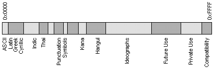

После рассмотрения процедур установки ОС в разделе 3 мы сразу перешли к
рассмотрению вопросов работы с отдельными командами и программными пакетами. Но
намеченная цель создания удобной рабочей среды не может быть достигнута, пока
пользователь не может "разговаривать" с компьютером на родном языке. О том, как
организуется такое общение, в частности, на русском языке, мы и поговорим в этом
разделе.
Вообще то можно сказать, возникнуть вопрос: а надо ли подробно разбирать
вопрос русификации, если дистрибутив русифицирован? Однако задача русификации
может встать перед любым пользователем ОС Линукс, даже если он пользуется
русифицированным дистрибутивом. Дело в том, что русификация может нарушиться при
установке некоторых новых пакетов. У меня, например, что-то случилось с
русификацией после установки XFree86 версии 4.0.1. Так что даже если
первоначально Вы установили полностью русифицированный дистрибутив, то Вы имеете
шанс столкнуться с проблемой русификации позже. Кроме того, может получиться и
так, что новая версия нерусифицированного дистрибутива появится раньше, чем
соответствующий русифицированный вариант. Может быть и не всегда надо ждать пока
выйдет русская версия. Поэтому попробуем разобраться в вопросах русификации.
Начать надо с двух замечаний. Во-первых, поскольку способы вывода информации
на экран в графическом и текстовом режимах принципиально различны, придется
отдельно рассмотреть вопрос о русификации текстового и графического режима.
Во-вторых, в системе Linux существуют два конкурирующих пакета управления
консольными шрифтами и клавиатурой : kbd (ftp://ftp.win.tue.nl/pub/linux/utils/kbd/
или ftp://ftp.kernel.org/pub/linux/utils/kbd/)
и consoletools (http://lcr.sourceforge.net/). В разных
дистрибутивах применяются или один, или другой. Например, в Red Hat 4.х и 5.x
для русификации консоли применялся пакет kbd. В Red Hat 6.x применяется уже
другой пакет - consoletools. Приводимое ниже описание основано на рассмотрении
пакета consoletools. Аналогично, для графического режима тоже существуют разные
пакеты управления выводом информации. Мы будем рассматривать способ,
реализованный в пакете ???????. Там, где это возможно, будет указано на основные
отличия конкурирующих пакетов.
8.1. Предварительные сведения
8.1.1. Таблицы кодировки символов
В человеческом мире информация
представляется последовательностями
символов. Каждый символ имеет
каноническое изображение, которое позволяет однозначно идентифицировать данный
символ. Варианты начертания символов задают разные шрифты.
В вычислительных машинах для представления информации используются цепочки
байтов. Поэтому для перевода информации из машинного представления в
человеческий необходимы таблицы кодировки символов - таблицы соответствия
между символами определенного языка и кодами символов. Их еще называют кодовыми
страницами или применяют английский термин character set (который иногда
сокращают до charset).
Самой известной таблицей кодировки является код ASCII (Американский
стандартный код для обмена информацией). Первоначально он был разработан для
передачи текстов по телеграфу, причем в то время он был 7-битовым, то есть для
кодирования символов английского языка, служебных и управляющих символов
использовались только 128 7-битовых комбинаций. При этом первые 32 комбинации
(кода) служили для кодирования управляющих сигналов (начало текста, конец
строки, перевод каретки, звонок, конец текста и т.д.). При разработке первых
компьютеров фирмы IBM этот код был использован для представления символов в
компьютере. Поскольку в исходном коде ASCII было всего 128 символов, для их
кодирования хватило значений байта, у которых 8-ой бит равен 0. Значения байта с
8-ым битом, равным 1, стали использовать для представления символов
псевдографики, математических знаков и некоторых символов из языков, отличных от
английского (греческого, немецких умляутов французских диакритических знаков и
т.п.).
Когда стали приспосабливать компьютеры для других стран и языков, места для
новых символов уже не стало хватать. Для того, чтобы полноценно поддерживать
помимо английского и другие языки, фирма IBM ввела в употребление несколько
кодовых таблиц, ориентированных на конкретные страны. Так для скандинавских
стран была предложена таблица 865 (Nordic), для арабских стран - таблица 864
(Arabic), для Израиля - таблица 862 (Israel) и так далее. В этих таблицах часть
кодов из второй половины кодовой таблицы использовалась для представления
символов национальных а лфавитов (за счет исключения некоторых символов
псевдографики).
С русским языком ситуация развивалась особым образом. Очевидно, что замену
символов во второй половине кодовой таблицы можно произвести разными способами.
Вот и появились для русского языка несколько разных таблиц кодировки символов
кириллицы: KOI8-R, IBM-866, CP-1251, ISO-8551-5. Все они одинаково изображают
символы первой половины таблицы (от 0 до 127) и различаются представлением
символов русского алфавита и псевдографики. Подробнее о
кодовых страницах Вы можете прочитать в приложении "Код ASCII и кодовые
страницы", где приведены также таблицы этих кодировок.
Для таких языков, как китайский или японский, 256 символов недостаточно.
Кроме того, всегда существует проблема вывода или сохранения в одном файле
одновременно текстов на разных языках (например, при цитировании). Поэтому была
разработана универсальная кодовая таблица UNICODE, содержащая символы,
применяемые в языках всех народов мира, а также различные служебные и
вспомогательные символы (знаки препинания, математические и технические символы,
стрелки, диакритические знаки и т.д.). Очевидно, что одного байта недостаточно
для кодирования такого большого множества символов. Поэтому в UNICODE
используются 16-битовые (2-байтовые) коды, что позволяет представить 65 536
символов. К настоящему времени задействовано около 49 000 кодов (последнее
значительное изменение -- введение символа валюты EURO в сентябре 1998 г.). На
следующем рисунке схематично представлено размещение символов разных языков в
кодовом пространстве UNICODE.

Для совместимости с
предыдущими кодировками первые 256 кодов совпадают со стандартом ASCII.
В стандарте UNICODE кроме определенного двоичного кода (эти
коды принято обозначать буквой U, после которой следуют знак + и собственно код
в шестнадцатиричном представлении) каждому символу присвоено определенное
имя. В следующей табличке приведены несколько примеров кодов и
имен символов из стандарта UNICODE :
| Символ |
UNICODE |
Character Name |
| A |
U+0041 |
LATIN CAPITAL LETTER A |
| a |
U+0061 |
LATIN SMALL LETTER A |
| Ю |
U+042E |
CYRILLIC CAPITAL LETTER YU |
| 1 |
U+0031 |
DIGIT ONE |
| + |
U+002B |
PLUS SIGN |
|
U+03A9 |
GREEK CAPITAL LETTER OMEGA |
|
|
U+2569 |
BOX DRAWINGS DOUBLE UP AND HORIZONTAL |
Еще одним компонентом стандарта UNICODE являются алгоритмы для
взаимно-однозначного преобразования кодов UNICODE в последовательности байтов
переменной длины. Необходимость таких алгоритмов обусловлена тем, что не все
приложения умеют работать с UNICODE. Некоторые приложения понимают только
7-битовые ASCII-коды, другие приложения - 8-битовые ASCII-коды. Такие приложения
используют для представления символов, не поместившихся, соответственно, в
128-символьный или 256-символьный набор, так называемые расширенные ASCII-коды,
когда символы кодируются цепочками байтов переменной длины. Алгоритм UTF-7
служит для обратимого преобразования кодов UNICODE в расширенные 7-битовые
ASCII-коды, а UTF-8 - для обратимого преобразования кодов UNICODE в расширенные
8-битовые ASCII-коды.
Отметим, что и ASCII и UNICODE и другие стандарты кодировки символов не
определяют изображения символов, а только состав набора символов и способ его
представления в компьютере. Кроме того (что, может быть, не сразу очевидно),
очень важен порядок перечисления символов в наборе, так как он влияет самым
существенным образом на алгоритмы сортировки. Именно таблицу соответствия
символов из какого-то определенного набора (скажем, символов, применяемых для
представления информации на английском языке, или на разных языках, как в случае
с UNICODE) и обозначают термином таблица кодировки символов или
charset. Каждая стандартная кодировка имеет имя, например, KOI8-R,
ISO_8859-1, ASCII. К сожалению, стандарта на имена кодировок не существует.
8.1.2. Ввод символов с клавиатуры
Общение пользователя с компьютером в
текстовом режиме осуществляется с помощью драйвера терминала, который входит в
состав ядра Linux. Драйвер терминала состоит как бы из двух отдельных драйверов:
драйвера клавиатуры и драйвера экрана. Драйвер клавиатуры обрабатывает нажатия
клавиш пользователем и передает результат прикладной программе, которая, в свою
очередь, посылает экранному драйверу символы, которые должны быть отображены на
экране. Вначале рассмотрим подробнее процесс ввода символов с клавиатуры.
При нажатии на любую клавишу микропроцессор клавиатуры генерирует
последовательность так называемых скан-кодов, которая представляет собой
последовательность из 2 или большего числа байтов, и передает ее драйверу
клавиатуры. Драйвер клавиатуры работает в одном из 4 возможных режимов:
-
В простейшем случае (режим ввода скан-кодов K_RAW) прикладной
программе передаются просто скан-коды, сгенерированные клавиатурой. Этот режим
используется при работе с приложениями, которые имеют собственный драйвер
клавиатуры. Примером такого приложения является система X Window.
-
Во втором режиме (режим K_MEDIUMRAW) скан-код клавиши преобразуется
в один из 127 возможных кодов, называемых кодами клавиш (keycodes). Каждый код
клавиши состоит из кода нажатия клавиши и кода отпускания клавиши.
Преобразование скан-кодов в коды клавиш осуществляется в соответствии с
внутренней таблицей драйвера клавиатуры. Обычно эта таблица фиксирована и
изменять ее не требуется, хотя в системе существуют команды getkeycodes
и setkeycodes, с помощью которых можно просмотреть или изменить
некоторые соответствия в этой таблице. Эти команды используются только в том
случае, если у Вас программируемая клавиатура.
-
В третьем режиме (режим ASCII или K_XLATE) код клавиши преобразуется
в ASCII-код символа или некоторую последовательность ASCII-кодов символов в
соответствии с таблицей раскладки клавиатуры, которая хранится в виде
отдельного файла. Например, для Red Hat Linux 5.2 по умолчанию используется
файл defkeymap.map в каталоге /usr/lib/kbd/keymaps/i386/qwerty.
Команда dumpkeys(1) выводит на экран содержание действующей в данный
момент таблицы раскладки клавиатуры, а команда loadkeys(1) загружает в
драйвер таблицу раскладки клавиатуры из указанного файла.
-
И, наконец, в четвертом варианте (режим K_UNICODE) скан-код клавиши
преобразуется в символ UNICODE (этот режим пока используется очень редко).
Выбор режима работы драйвера терминала определяется прикладной программой,
которая в данный момент времени выполняется компьютером. Чаще всего используется
второй режим, когда код клавиши либо преобразуется в ASCII-код символа или
строку таких кодов в соответствии с таблицей раскладки клавиатуры, либо
выполняется действие, определенное для конкретной комбинации клавиш в таблице
раскладки клавиатуры. Например, нажатие [Ctrl]-[Alt]-[Del] эквивалентно вызову
команды shutdown -r 0, то есть приводит к останову системы и перезагрузке
компьютера.
Режим работы драйвера клавиатуры можно узнать или изменить с помощью команды
kbd_mode(1). Однако не торопитесь менять режим, так как перевод драйвера
клавиатуры в режим RAW или MEDIUMRAW может сделать его недоступным
для большинства приложений, то есть легко можно вообще потерять возможность
ввода команд.
Не для всех клавиш и комбинаций клавиш процесс обработки проходит так
прямолинейно, как это описано выше. Во-первых, имеется несколько особых клавиш,
так называемых клавиш-переключателей. Это клавиши:
[Shift-L]
[Shift-R]
[Alt-L]
[Alt-R]
[Ctrl-L]
[Ctrl-R]
[Caps Lock]
[Num Lock]
[Ins]
Нажатие на
клавишу-переключатель изменяет значение одного из разрядов (битов) в
двух-байтовом слове, которое хранит состояние клавиш-переключателей. Поэтому
драйвер клавиатуры вначале должен проанализировать состояние этого слова, а
затем соответственно преобразовать коды.
Клавиша [Ins] является единственной
из клавиш переключателей, нажатие которой не только заносит признак в слово
состояния переключателей, но и порождает передачу соответствующего кода драйверу
терминала.
С помощью ASCII-кодов можно представить 256 различных символов, а, значит,
ASCII-коды можно сопоставить 256-ти кодам клавиш. Учитывая наличие клавиш
переключателей, комбинаций клавиш существует гораздо больше. Поэтому некоторые
комбинации клавиш драйвер клавиатуры преобразует в так называемые расширенные
ASCII-коды. Эти коды состоят из нескольких байтов, первые два из которых - это
так называемый символ Esc-последовательности, а последующие - собственно
значащие байты. Расширенные ASCII-коды обычно представляют те комбинации клавиш,
которые используются для управления работой программ, таких как стрелки, клавиши
[Page Down], [Page Up], [Home], [End], [F1] - [F12], [Ins], [Del] и т.д.
В комплект Red Hat Linux входит программа showkey, которая показывает
все три вида кодов, связанных с нажатиями клавиш. Если запустить эту программу с
параметром -s, она будет показывать скан-коды нажатий клавиш (чтобы выйти
из программы, надо просто выждать 10 секунд, не нажимая в это время ни одной
клавиши). Ввод команды showkey -k приводит к выводу на экран кодов клавиш
(выходим так же). Ввод команды showkey -a позволяет просмотреть
ASCII-коды, причем они сразу выдаются в десятичной, восьмеричной и
двоично-десятичной кодировках. Выход из программы в этом случае надо производить
нажатием комбинации [Ctrl]-[D]. Попробуйте в этом режиме нажать [Ctrl]-[=] или
[Ctrl]-[Esc], и Вы увидите, что не каждая комбинация клавиш порождает ASCII-код
(попробуйте также клавиши-переключатели).
Примечание: Если Вы
уже перешли в графический режим, то программа showkey может работать
некорректно, о чем она вежливо сообщает при запуске. Обратите внимание на эти
сообщения!
Итак, прикладной программе передан один из трех кодов нажатой клавиши - либо
скан-код, либо код клавиши, либо ASCII-код. Теперь уже дело прикладной программы
как его обработать. Обычно (если не считать управляющих комбинаций) код нажатой
клавиши либо записывается в файл, либо соответствующий символ отображается на
экране. В файл, конечно, записываются последовательности байтов, но и они в
конечном итоге записываются только для того, чтобы информацию потом смог
прочитать человек, а человек воспринимает только изображения символов, которые
он может увидеть на экране или на распечатке.
8.1.3. Вывод символов на экран
При рассмотрении вопроса о выводе информации на экран приходится различать
текстовый и графический режим, поскольку в текстовом режиме выводится только
"каноническое" изображение, а в графическом режиме надо вывести шрифт.
Текстовый режим.
Работа экранного драйвера текстового режима основана на использовании
16-битовой кодировки символов UNICODE (UCS2). Изображение каждого символа (это
изображение называют глифом, от английского gliph), соответствующего любому
2-байтовому коду кодировки UNICODE, представляется матрицей из нолей и единиц
размером 8 столбцов на H строк (единица соответствует светящейся точке на
экране, а ноль - затемненной точке). Каждая строка этой матрицы кодируется одним
байтом. Совокупность таких матриц (точнее, их байтовых представлений) для всех
символов UNICODE образует таблицу экранного шрифта (Screen Font Map - SFM).
Файл, в котором хранится такая таблица, может содержать шрифт одного размера по
высоте (H) или шрифты нескольких размеров.
Экранный драйвер может работать в одном из двух режимов: режиме UTF или
байтовом режиме. Выбор режима определяется приложением, которое обращается к
этому драйверу для вывода символов на экран.
В режиме UTF последовательности байтов, получаемые от приложения для
отображения на экране консоли, преобразуются по алгоритму UTF в коды UNICODE.
После такого преобразования драйвер экрана обращается к загруженной в память
таблице экранного шрифта (SFM) за соответствующим данному коду изображением
символа (глифом).
В байтовом режиме драйвер экрана использует дополнительную таблицу - таблицу
перекодировки символов (Application Charset Map или кратко ACM) для
преобразования получаемых от приложения последовательностей байтов в коды
UNICODE. Эта таблица зависит от кодировки символов, применяемой приложением. В
дальнейшем драйвер экрана, как и в режиме UTF, обращается к таблице экранного
шрифта (SFM) для того, чтобы извлечь из нее изображение нужного символа.
Примечание: Для того, чтобы определить, работает ли виртуальная консоль в
режиме UTF или в байтовом режиме, можно воспользоваться скриптом
vt-is-UTF8(1), а для переключение режимов работы виртуальной консоли
служат два скрипта: unicode_start(1) и unicode_stop(1).
В ядре Линукс отведено место для хранения четырех таблиц перекодировки ACM.
При этом 3 таблицы встроены в ядро и никогда не меняются и только выбор 4-ой
таблицы может изменяться пользователем. Первые 3 таблицы определяют 437 кодовую
страницу IBM, таблицу для набора символов терминала DEC VT100 и таблицу для
набора символов ISO latin1. В качестве четвертой таблицы перекодировки в ядре
может быть записана таблица перекодировки, выбранная пользователем.
Консольный драйвер Linux позволяет для каждой виртуальной консоли определить
(с помощью команды charset) две ссылки (в документации их называют
"сокетами") на таблицы перекодировки ACM. Эти две ссылки обозначаются как G0 и
G1, причем для каждого виртуального терминала значения, присвоенные этим
ссылкам, выбираются независимо. Однако, хотя выбор таблицы перекодировки,
определяемой ссылками G0 или G1, производится независимо для каждого
виртуального терминала, реально все терминалы используют одну и ту же
пользовательскую таблицу ACM. Это ограничение определяется тем, что 4 таблицы
ACM загружены в ядро Linux, причем 3 из них фиксированы (это cp437, iso01 и
vt100), и только четвертая таблица определяется пользователем. И, поскольку в
ядро может быть загружена только одна пользовательская таблица, то нельзя задать
для разных консолей разные пользовательские таблицы перекодировки. То есть, Вы
можете задать для tty1 использование G0=cp437 и G1=vt100, а для tty2
использование G0=iso01 и G1=iso02 (определяемая пользователем кодировка), но не
можете сделать так, что в одно и то же время tty1 использует iso02, а tty2
использует iso03.
Команда consolechars(1) используется для изменения ACM, так же как и
для задания шрифта и ассоциированной с ним таблицы SFM. С помощью команды
consolechars можно считать консольный шрифт (таблицу экранного шрифта
SFM) 8xH из файла и загрузить его в память, а также сохранить в файле шрифт,
загруженный в память. Эта же команда служит для загрузки в ядро таблицы
перекодировки, а также позволяет переопределить ссылки G0 и G1.
В качестве одной из опций команды consolechars при загрузке экранного
шрифта из файла может быть задан размер шрифта по вертикали H. Значение H должно
считываться из файла шрифта. Однако файлы некоторых форматов (в частности,
файлы, содержащие только битовые образы символов) не содержат прямого указания
на этот размер. В таком случае значение опции -H вычисляется исходя из размера
файла (обычно -H 8, -H 14 или -H 16). Поскольку в настоящее время Линукс не
позволяет программно переключать режим работы дисплея, то выбор подходящего
значения H в зависимости от установленного разрешения экрана полностью
возлагается на пользователя.
В заключение отметим еще, что файлы с экранными шрифтами по умолчанию
располагаются в каталоге /usr/lib/kbd/consolefonts/, а каталог
/usr/lib/kbd/consoletrans/ используется для хранения как таблиц ACM, так
и SFM.
Графический режим.
В графическом режиме нет разбиения экрана на знакоместа, изображение любого
символа можно вывести практически в любую позицию экрана. Изображения символов
(глифы - glyphs) для конкретного набора символов составляют шрифт. Шрифты
хранятся в файлах.
8.1.4. Локализация
Только организовать ввод и вывод символов
национального языка еще недостаточно для того, чтобы можно было считать решенным
проблему применения компьютеров в той или иной стране. В разных странах в силу
сложившихся традиций имеются различия не только в используемом алфавите, но и в
способах представления некоторых конкретных данных. Это касается таких,
например, вопросов, как символ, используемый для обозначения валюты, форматы
представления даты и времени, обычай записи (чтения) текстов слева направо или
справа налево и т.д. При создании ПО, рассчитанного на применение в разных
странах, приходится учитывать такие местные особенности. Кроме того, большие
трудности вызывают такие вопросы как проверка орфографии на конкретном языке,
автоматическая расстановка переносов при вводе текста или перевод на данный язык
всех меню и служебных сообщений в программном обеспечении.
Способ проектирования ПО (включая ОС), при котором возможность многоязыковой
поддержки закладывается с самого начала, принято называть
интернационализацией (кстати, загадочное i18n - это просто сокращение для
слова internationalization: i - потом еще 18 букв - n, аналогично, l10n =
localization). При интернационализации программного обеспечения КОД не зависит
от национальных особенностей. Все языково-зависимые данные сосредотачиваются в
особых "объектах локализации", которые разбиты на функциональные группы :
категории локализации. При таком подходе локализация -- это процесс
настройки программной системы на особенности конкретной страны.
В стандарте POSIX (Portable Operating System) были определены средства
локализации, которые состоят из следующих компонентов :
- Набор библиотечных (libc) вызовов (locale API):
setlocale(), isalpha(), toupper(), и т.д.
- Исходные тексты описания средств локализации, в том числе файл(ы) описания
кодировки (Character Set Definition File).
- Наборы данных для локализации, которые в Linux размещаются в каталогах
/usr/share/i18n/* и /usr/share/locale/* .
- Утилита для получения информации о средствах локализации : locale
- Утилита для изготовления (компиляции) объектов локализации :
localedef
- Переменные окружения, для управления средствами локализации : LANG,
LC_ALL, LC_CTYPE, LC_TIME, LC_COLLATE, LC_NUMERIC и LC_MONETARY (они
соответствуют категориям локализации).
В следующей таблице кратко
перечислено, на что именно влияет та или иная из этих переменных.
| LC_CTYPE |
Определяет правила классификации и преобразования одиночных
символов. Позволяет правильно определять вид символа: цифра, буква,
значок, заглавная буква или прописная и т.д. Другими словами, включает
правильную работу системных вызовов isalnum(), isalpha(),
iscntrl(), isdigit(), ... и т.п. для местного алфавита.
Вдобавок, включает правильный перевод строчных -- прописных букв:
toupper() и tolower(). |
| LC_COLLATE |
Определяет правила сравнения и преобразования строк. Позволяет
определять лексикографический порядок символов (порядок сортировки) в
местном алфавите. Включает правильную работу strcoll() и
strxfrm(). Оказывает непосредственное влияние на работу утилит типа
sort и т.д. |
| LC_TIME |
Определяет правила национального представления времени и даты.
Задает именование дней недели, месяцев и т.п. а также задает способ
написания даты и времени (12/24). Hепосредственно влияет на
strftime(), а через нее на утилиты date и т.д. |
| LC_NUMERIC |
Определяет правила национального представления чисел с
плавающей точкой. Влияет на strtod() и форматы %f и %g
printf(), scanf(). |
| LC_MONETARY |
Определяет правила национального представления денежных величин. (См.
Currency Symbols ISO 4712) strfmon(). |
Особая переменная LC_ALL служит для обращения
одновременно ко всем категориям, т.е. работает как '*' (wildcard).
Заметим, что включение средств локализации изменяет также некоторые пути
поиска, в частности, пути поиска к файлам помощи (man-страницам), так что
вначале команда man ищет переведенные man-страницы и только при их отсутствии
выдает информацию на английском.
Подводя краткий итог всему вышеизложенному, можно сказать, что процедура
русификации системы состоит из следующих этапов:
- настройка средств локализации
- русификация текстового режима (консоли)
- русификация графического режима
- русификация используемого ПО
- русификация процесса печати
В последующих разделах каждый из этих
этапов рассматривается по отдельности.
8.2. Настройка системных средств локализации
Современные
дистрибутивы Линукс (а тем более русифицированные, типа Black Cat) по умолчанию
содержат системные средства локализации, перечисленные выше в разделе 8.1.4.
Чтобы убедиться в этом, проверьте, что у Вас имеются каталоги
/usr/share/locale/* и /usr/share/i18n/*, а также файл
/etc/sysconfig/i18n.
Кроме того, дайте команду
locale
В ответ Вы должны получить значения, присвоенные переменным окружения для
управления средствами локализации. Я, например, увидел следующее:
LANG=ru
LC_CTYPE="ru_RU.KOI8-R"
LC_NUMERIC="ru_RU.KOI8-R"
LC_TIME="ru_RU.KOI8-R"
LC_COLLATE="ru_RU.KOI8-R"
LC_MONETARY="ru_RU.KOI8-R"
LC_MESSAGES="ru_RU.KOI8-R"
LC_ALL=ru_RU.KOI8-R
Можно также дать команду locale с параметром, совпадающим с именем
одной из переменных окружения, например:
locale LC_TIME
(но я не берусь объяснить то, что Вы увидите).
Если результат этих проверок отрицательный (что маловероятно), то установите
пакет локализации для русского языка. Найти его можно в коллекции средств
локализации по адресу http://www.ping.be/linux/locales/
или на http://www.kiarchive.ru/pub/unix/cyrillic/new-locale.tar.gz.
После этого надо сказать Линуксу, какой язык Вы хотите использовать, для чего
необходимо задать значения переменных окружения для управления средствами
локализации: LC_CTYPE, LC_TIME, LC_COLLATE, LC_NUMERIC, и LC_MONETARY. Вообще
говоря, достаточно задать всего одну переменную LC_ALL, задание которой
одновременно определяет значения всех перечисленных выше переменные. Задавать им
разные значения требуется только в редких случаях (каких - не знаю).
Есть еще две переменных окружения, которые имеют отношение к локализации:
LANG и LINGUAS. Они действуют примерно так же, как и LC_ALL, в том смысле, что
они определяют значения по умолчанию всех других переменных локализации, но, в
отличие от LC_ALL, они не переопределяют значений других переменных LC_*, для
которых значения заданы отдельно.
Переменная LINGUAS является GNU-расширением переменой LANG. Не все программы
знают о существовании этой переменой (хотя не знают очень немногие, и таких все
меньше), но эта переменная обладает тем преимуществом, что она позволяет задать
несколько вариантов локализации, в порядке предпочтения. В большинстве случаев
достаточно задать только одну переменную локализации - LANG. Если Вы хотите
использовать несколько вариантов локализации, то надо задать LANG и LINGUAS.
Остальные переменные необходимо задавать только в особых случаях, которые мы
здесь не рассматриваем.
Формат задания значений переменных локализации.
В качестве значений переменных локализации используются строки формата
ll[_CC[.EEEE]][@dddd], где ll - это двухбуквенный код языка в
соответствии со стандартом ISO для названий языков (ISO 639), записываемый в
нижнем регистре (строчными латинскими буквами); CC - это двухбуквенный
код страны в соответствии со стандартом ISO для названий стран (ISO 3166),
записываемый в верхнем регистре; EEEE - это имя (название) таблицы
кодировки, записываемое в верхнем регистре; и dddd - название диалекта
языка, который задается в том случае, если названия кодировки недостаточно для
однозначного определения варианта локализации. Для переменной LINGUAS задаваемые
значения разделяются двоеточиями. Пример строки задания значений переменной Вы
уже видели: ru_RU.KOI8-R.
Как уже говорилось, стандарта на названия кодовых таблиц нет, тем более на
название диалектов. То, что в шаблоне дано только 4 символа, ничего не означает
- символов может быть и больше, и меньше. Обязательным в этом шаблоне является
только название языка, но в некоторых источниках рекомендуется для русского
языка указывать все три части. Напомню еще, что аббревиатура SU теперь означает
Судан, а не нашу страну.
Включение средств локализации
Включение системных средств локализации в Red Hat Linux (а, следовательно, и
в других дистрибутивах, основанных на Red Hat) осуществляется из файла
/etc/profile.d/lang.sh.
Как известно, при старте любого shell-а сначала выполняется
/etc/profile. В Red Hat в /etc/profile прописаны команды,
благодаря которым на исполнение вызываются также все файлы
/etc/profile.d/*.sh
Значения переменных локализации в файла lang.sh задаются путем вызова
на выполнение файла /etc/sysconfig/i18n. В файле
/usr/doc/initscripts-4.16/sysconfig.txt.rus приведены краткие
рекомендации относительно того, как задавать значения переменных в файле
/etc/sysconfig/i18n, в частности, предлагается для LANG указать в
качестве значения просто двухбуквенный код ISO для желаемого языка, для
переменной LINGUAS - список кодов языков разделенный : (двоеточием), а
переменной LC_ALL присвоить имя в соответствии с приведенным выше
описанием формата для переменных локализации. Таким образом, в файле
/etc/sysconfig/i18n рекомендуется прописать три строки следующего вида:
LANG="ru_RU.KOI8-R"
LINGUAS="ru:en"
LC_ALL="ru_RU.KOI8-R"
Заметим, что в RU.LINUX.FAQ написано следующее: "Хотя в принципе допустимо
задавать короткое именование, вроде
LANG=ru_RU или даже
LANG=ru,
лучше использовать _полное_ имя :
LANG=ru_RU.KOI8-R. Совершенно
недопустимо задавать LANG=ru_SU, такой страны больше нет :-)".
Если все, что было перечислено, сделано, можно считать, что локализация
включена.
Правда, это верно только для случая, когда Вы имеете права root-а. Но даже
если же Вы простой пользователь Линукс-системы и не можете редактировать файл
/etc/sysconfig/i18n, то Вы все же можете включить локализацию для себя,
но несколько иным способом. А именно, поместите в свой файл
$HOME/.profile (или в любой файл, который исполняется в процессе
логирования пользователя: $HOME/.Xclients, $HOME/.xinitrc или
другой) следующие строки:
export LANG=ru_RU.KOI8-R
export LINGUAS=ru_RU:en
export
LC_ALL="ru_RU.KOI8-R"
Вот и все ! (О том, как проверить, что локализация заработала, было сказано
выше.)
8.3. Русификация консоли (текстовый режим)
8.3.1. Что нужно сделать
Если Вы внимательно прочитали раздел 8.1.3, то
представляете, что для русификации консоли (а консоль - это, грубо говоря,
совокупность клавиатуры и дисплея) требуется загрузить в драйвер консоли три
таблицы:
- таблицу раскладки клавиатуры;
- таблицу экранного шрифта
(SFM), в которой хранятся изображения символов;
- таблицу перекодировки
символов (ACM).
Таблицы раскладки клавиатуры находятся в каталоге
/usr/lib/kbd/keymaps/i386/qwerty. Выбор конкретного файла раскладки
задается файлом /etc/sysconfig/keyboard. Этот файл можно отрегулировать
вручную, а можно с помощью программы kbdconfig. В последнем случае нужная
таблица с раскладкой клавиатуры загружается в память. При ручном изменении файла
/etc/sysconfig/keyboard перезагрузка таблицы произойдет только после
перезапуска компьютера или после выполнения команды (в примере загружается
раскладка из файла ru-win.map):
loadkeys /usr/lib/kbd/keymaps/i386/qwerty/ru-win.map
Второй шаг русификации состоит в задании и загрузке таблицы экранного шрифта
(SFM) в драйвер дисплея. Эти таблицы хранятся в виде файлов в каталоге
/usr/lib/kbd/consolefonts. Загрузка фонтов осуществляется немного по
разному в пакетах kbd и consoletools (соответственно, в версиях
5.2 и 6.x Red Hat Linux).
В версии 5.2 загрузка фонта осуществлялась с
помощью команды setfont. Например, чтобы загрузить кодовую страницу из
файла Cyr_a8x16, нужно дать команду
setfont
/usr/lib/kbd/consolefonts/Cyr_a8x16
В версии 6.0 предпочтительнее использовать команду consolechars с
опцией -f:
consolechars -f /usr/lib/kbd/consolefonts/Cyr_a8x16
(Отметим, что команда setfont тоже сработает, только выдаст
предупреждение о том, что надо пользоваться командой consolechars.)
Файлы шрифтов (фонты) являются бинарными файлами размером 256*H байт,
содержащими битовые образы для каждого из 256 символов, по одному байту на
каждую линию образа и по H байт на символ (0 < H <= 32). В этом случае о
размере шрифта по вертикали можно судить по длине файла. В качестве файлов
фонтов могут использоваться файлы .psf; они имеют тот же самый формат и, кроме
того, заголовок размером 4 байта.
Некоторые файлы фонтов содержат сразу три
фонта разного размера (например, 8х8, 8х14, 8х16), тогда в команде
consolechars надо добавить опцию -H, например: -H 16, для
выбора одного из размеров. Поскольку ядро Linux не поддерживает пока
переключение режимов работы экрана, consolechars (как и setfont)
не может изменить текущий режим EGA/VGA. Таким образом, пользователь полностью
ответственен за выбор фонта, соответствующего текущему режиму экрана.
Соответствие между символами кода ASCII и образами (или изображениями
символов) из файла фонта можно изменить, используя таблицу перекодировки (ACM -
Application Charset Map). Если эту таблицу не загрузить, то, например, в
программе Midnight Commander Вы можете вместо красивых рамочек увидеть столбцы и
строки из непонятных символов. Некоторые файлы фонтов включают таблицу
перекодировки фонта, и тогда consolechars загрузит эту таблицу. По
умолчанию файлы фонтов находятся в каталоге /usr/lib/kbd/consolefonts, а
таблицы перекодировки - в каталоге /usr/lib/kbd/consoletrans.
Таблицу перекодировки в 6-ой версии Red Hat (то есть в пакете
consoletools) можно загрузить отдельной командой consolechars с
опцией -m file:
consolechars -m /usr/lib/kbd/consoletrans/koi2alt
Если таблица
перекодировки не включена в фонт и не указана в опции -m, то используется
"тривиальная" таблица.
В версии 5.2 для загрузки таблицы перекодировки используется команда
mapscrn:
mapscrn
/usr/lib/kbd/consoletrans/koi2alt.
В этом случае драйвер консоли должен
быть дополнительно переведен в режим перекодировки, задаваемый таблицей, путем
вывода на консоль специальной escape-последовательности. Эта последовательность
есть "<esc>(K" для набора символов G0 (G0 character set) и
"<esc>)K" для набора символов G1 (G1 character set). Заметим, что
активизировать эту таблицу необходимо в каждой консоли. При этом команда
loadkeys действует одновременно во всех виртуальных консолях, а вот
команда mapscrn действует только в той виртуальной консоли, в которой
выполнена команда echo -ne '\033(K'.
Два замечания : 1. ESC(K
требуется, когда загружается альтернативная кодировка и активизируется таблица
перекодировки псевдографики командой mapscrn koi2alt. Если шрифт koi-8, то
никаких ESC(K не надо.
2. Все это не действует из под Midnight
Commander!
Существует еще таблица перекодировки для символов Unicode. Некоторые файлы
фонтов включают эту таблицу и она будет загружена командой consolechars,
если только не задана опция --force-no-sfm. Отдельно загрузить таблицу
перекодировки символов Unicode можно командой consolechars с опцией -u
(см. man).
Итак, для того, чтобы русифицировать консоль, нужно выполнить следующую
последовательность команд:
- для версии 5.2:
loadkeys /usr/lib/kbd/keytables/i386/qwerty/ru.map
setfont /usr/lib/kbd/consolefonts/Cyr_a8x16
mapscrn /usr/lib/kbd/consoletrans/koi2alt
echo
-ne '\033(K'
- для версии 6.0:
loadkeys /usr/lib/kbd/keytables/i386/qwerty/ru.map
consolechars -f /usr/lib/kbd/consolefonts/Cyr_a8x16
consolechars -m /usr/lib/kbd/consoletrans/koi2alt
Но выполнять эту последовательность команд после каждого перезапуска
компьютера, да еще в каждой виртуальной консоли, что-то не хочется. Поэтому
рассмотрим вкратце как русификация выполняется в дистрибутиве Black Cat Linux.
8.3.2. Как это сделано в дистрибутиве Black Cat
Во-первых в файле
/etc/sysconfig/i18n вводится новая переменная: в версии 5.2 это
переменная SCRNMAP, а в версии 6.02 - SYSFONTACM. Этой переменной по умолчанию
присваивается значение "koi2alt". Вот стандартный файл
i18n из Black Cat
Linux версии 6.02:
LANG=ru
LINGUAS=ru
LC_ALL=ru_RU.KOI8-R
SYSFONT=RUSCII_8x16
SYSFONTACM=koi2alt
Вызов файла i18n для задания значений переменных осуществляется из
скрипта /sbin/setsysfont, из которого вызываются также команды
setfont и mapscrn (в версии 5.2) или consolechars (в версии
6.0). Вот этот скрипт из Black Cat Linux версии 5.2:
-----------------------------------
#!/bin/sh
if [ -f
/etc/sysconfig/i18n ]; then
. /etc/sysconfig/i18n
fi
if [ -x /usr/bin/setfont ]; then
if
[ -n "$SYSFONT" ]; then
/usr/bin/setfont
$SYSFONT
fi
if [ -x /usr/bin/mapscrn ];
then
if [ -n "$SCRNMAP" ]; then
/usr/bin/mapscrn $SCRNMAP
fi
fi
else
echo "can't set font"
exit 1
fi
------------------------------------
Как видно, при вызова скрипта /sbin/setsysfont выполняются
команды "setfont Cyr_a8x16" и "mapscrn koi2alt". После
этого для включения в ядре кодовой таблицы пользователя необходимо выдать на
каждую виртуальную консоль последовательность "\033(K". Это
реализовано путем добавления этой последовательности к файлу /etc/issue,
который генерируется при загрузке системы скриптом /etc/rc.d/rc.local и
вызывается на исполнение при логировании каждого пользователя (???). Вот пример
скрипта /etc/rc.d/rc.local из версии 5.2:
-------------------------------------
#!/bin/sh
# This script will be executed *after* all the other init scripts.
# You can put your own initialization stuff in here if you don't
# want to do the full Sys V style init stuff.
if [ -f /etc/blackcat-release ]; then
R=$(cat
/etc/blackcat-release)
elif [ -f /etc/redhat-release ]; then
R=$(cat
/etc/redhat-release)
else
R="release 3.0.3"
fi
arch=$(uname -m)
a="a"
case "_$arch" in
_a*) a="an";;
_i*) a="an";;
esac
# This will overwrite /etc/issue at every boot. So, make any
changes you
# want to make to /etc/issue here or you will lose them
when you reboot.
. /etc/sysconfig/i18n
echo "" > /etc/issue.net
echo "Black Cat Linux $R"
>> /etc/issue.net
echo "Kernel $(uname -r) on $a $(uname -m)"
>> /etc/issue.net
if [ -n "$SCRNMAP" ]; then
echo -ne
"\033(K" > /etc/issue
else
echo "" > /etc/issue
fi
if [ -f
/usr/bin/linux_logo ]; then
/usr/bin/linux_logo
-n -o 2 >> /etc/issue
echo "" >> /etc/issue
fi
cat /etc/issue.net >> /etc/issue
echo
"" >> /etc/issue
-------------------------------------
В версии 6.02 все происходит примерно так же. Просмотрите упомянутые выше
файлы и Вы убедитесь в этом сами.
8.3.3. Изменение раскладки клавиатуры
Как уже было сказано выше, можно
поменять раскладку клавиатуры командой
kbdconfig. Эта команда прописывает
новое значение в файл
/etc/sysconfig/keyboard и загружает указанную
таблицу в оперативную память. Того же эффекта можно добиться, если приписать имя
новой таблицы в файл
/etc/sysconfig/keyboard и выполнить команду
/etc/rc.d/init.d/keytable start Оба этих варианта позволяют
переключиться на новую раскладку "на ходу".
Впрочем, переключение "на ходу" вряд-ли требуется делать, поскольку обычно
человек привыкает к одной раскладке и пальцы сами находят привычные клавиши, так
что всякое изменение тут только осложнит работу. Поэтому имеет смысл
проэкспериментировать один раз с различными раскладками, выбрать наиболее
удобную (считай, привычную) и на этом можно успокоиться.
При установке русифицированных дистрибутивов Linux (если не обобщать, то речь
идет о Black Cat) обычно выбирается раскладка ru1 (точка на Shift 7, запятая на
Shift 6). Для тех, кто привык работать в Windows, может оказаться более
привычной раскладка как в Windows (в русском регистре точка и запятая находятся
рядом с правой кнопкой Shift). Для таких пользователей имеется раскладка
ru_ms. Если Вас не удовлетворяют эти варианты, то можете выбрать любую из
имеющихся в Вашей системе, либо найти что-либо подходящее в Интернет.
Предположим, что Вы нашли и скачали файл ru_win_ctrl.map.gz от
IP Labs. Остается только положить этот файл в
/usr/lib/kbd/keytables/i386/qwerty/, запустить kbdconfig и выбрать
ru_win_ctrl.
После установки новой таблицы раскладки клавиатуры иногда возникают
затруднения в определении того, какая именно клавиша или комбинация клавиш
переключает из режима ввода английских символов в режим ввода русских символов.
Гадать тут не надо, достаточно просмотреть файл таблицы раскладки клавиатуры.
Обычно в самом начале файла эта комбинация указывается открытым текстом, правда
в большинстве случаев английским. (Если Вы забыли, какая именно таблица
загружена, то посмотрите файл /etc/sysconfig/keyboard).
Если Вас не устраивает ни одна из тех раскладок клавиатуры, которые имеются в
каталоге /usr/lib/kbd/keytables/i386/qwerty/, можете попробовать
подправить ту раскладку, которая ближе всего к Вашему идеалу. Попробуем
показать, как это делается на примере выбора клавиши переключения между русской
и латинской клавиатурой (этот совет позаимствован у Roman Minakov
aka digital pharao, e-mail:mailto:[email protected] ICQ:
21723828).
Для переключения между русской и латинской клавиатурой
часто используется правая клавиша Ctrl, в то время как на любой более-менее
современной IBM-клавиатуре есть три клавиши, которые как правило в Linux-е не
задействованы. Вот одну из них и приспособим для переключения алфавитов. Для
начала надо узнать какой у них код. Запускаем команду showkey с опцией
--keycodes (запуск showkey, естественно, производится с консоли и
необходимо предварительно выйти из mc!) и последовательно (слева направо)
нажимаем эти три клавиши, чтобы узнать их коды:
# showkey --keycodes
kb mode was XLATE
press any key (program terminates after 10s of last keypress)...
keycode
125 press
keycode 125 release
keycode 126 press
keycode 126 release
keycode 127 press
keycode 127 release
Числа 125, 126, 127 и есть коды этих клавиш. Далее переходим в каталог
/usr/lib/kbd/keytables/i386/qwerty, находим файл, который используется в данный
момент (что-то типа ru1.map, если в каталоге
/usr/lib/kbd/keytables/i386/qwerty Вы найдете только ru1.map.gz,
то выполните предварительно разархивацию: gunzip ru1.map.gz).
Для того, чтобы заставить клавишу работать как временный переключатель с
русского на латинский (пока клавиша удерживается), надо придать ей значение
AltGr, а чтобы она использовалась как постоянный переключатель - AltGr_Lock.
Находим внутри ru.map:
keycode 125 =
keycode 126 =
keycode 127 =
меняем на:
keycode 125 =
keycode 126 = AltGr
keycode 127 = AltGr_Lock
Далее надо изменить установки тех клавиш, которые ранее использовались для
переключения. Например, если в качестве постоянного переключателя использовалась
клавиша [Ctrl] (код клавиши 97), находим строку
keycode 97 =
и вписываем:
keycode 97 = Control
В итоге получаем: клавиша, расположенная возле правой клавиши [Ctrl], -
фиксированный переключатель "рус/лат", а та что рядом с правой клавишей [Alt] -
временный переключатель "рус/лат" (то есть действующий только на то время, пока
удерживается в нажатом положении соответствующая клавиша).
8.3.4. Переключение кодировок
Итак, мы научились по желанию изменять
таблицу раскладки клавиатуры. Теперь поговорим о том, как "на лету" изменить
кодировку символов. Необходимость в этом возникает в тех случаях, когда
просматриваешь какой-то файл и вместо читаемого текста видишь непонятную
белиберду. В таких случаях очень хочется превратить ее в нормальный текст
нажатием пары горячих клавиш. Можно, конечно, для каждого из необходимых фонтов
создать специальную команду, записав в небольшой файл приведенные выше команды,
естественно соответствующим образом модифицированные. Однако ясно, что это не
совсем удобно. В этом отношении хочется работать так же комфортно, как в
программе FAR Е.Рошаля, где в том случае, когда просматриваешь файл по F3 или
редактируешь его по F4, достаточно набрать Shift-F8 и получаешь возможность
перекодировать выводимый на экран текст в любую из нескольких кодировок. Можно
считать, что это уже роскошь, но что поделаешь, все мы быстро привыкаем к
хорошему и отказываться уже трудно.
Но, к сожалению, я пока не знаю, как сделать так, чтобы можно было смотреть
любые тексты и чтобы при необходимости можно было на лету перекодировать в
нужную кодировку.
P.S. 2 июля в linux.ru.net появилась сообщение о патче с
Midnight Commander версии 4.5.50, который позволяет производить перекодировку
как в FAR по нажатию клавиш ctrl-t (пока только во вьюере).
Для преобразования потока символов из одного charset в другой, в стандарте
POSIX существуют утилита iconv и функция iconv().
The major standards for programming languages, operating systems (POSIX), user
interfaces (X) and inter-system communication (RFC 1123, MIME and ISO 2022)
specify portable character sets which are subsets of ASCII. Protocol keywords
are defined to be strings from the portable character set, and where a default
initial encoding is specified, it is U.S. ASCII or its superset, ISO-8859-1.
Historically, computer text communications used 7-bit bytes and the ASCII
character set and encoding. Often, communications software would use the high
bit as a ``parity bit'', which facilitates error detection and correction. Some
terminal drivers would use it as a ``bucky-bit'' or to indicate face changes,
such as underlining or reverse video. Although none of these usages are bad per
se, they should be restricted to well-defined and well-documented interfaces,
with 8-bit-clean alternatives provided.
Unfortunately, the seven-significant-bits assumption leaked into a lot of
software, in particular implementations of electronic mail, and now has been
enshrined in Internet standards such as RFC-821 for the Simple Mail Transport
Protocol (SMTP) and RFC-822 which describes the format of Internet message
headers for text messages.
вызов setlocale(LC_XXXXX,"ru_SU.KOI8-R") будет пытаться открыть файл
"/usr/share/locale/ru_SU.KOI8-R/LC_XXXXX" и считать его внутрь структуры в
run-time части libc. Это все происходит совершенно прозрачно для пользователя.
Примечание: Значительная часть этого раздела основана на
"The
Linux Cyrillic HOWTO" Александра Беликова (Alexander L. Belikoff,
[email protected], Bloomberg L.P. Переводчик: Балдин Евгений Михайлович,
[email protected], Новосибирск, Россия. Версия 4.2 b2, Декабрь 11, 1998 ) и
материалах со странички Леона Кантера (Leon's home page). Однако как тот,
так и другой материал существенно устарел, так как в 6-ой версии Red Hat
изменились даже команды выбора фонта.
Использован также RU.LINUX.FAQ (c)Составление -
Станислав Корсуков, (s)Поддержание до сентября 1999 - Михаил Браво,
[email protected], (s)Поддержание - Aлександр Канавин, [email protected]
Очень хорошая статья (точнее 2 статьи) опубликованы в Linux Journal в
мартовском и апрельском номерах за 1999 год : Stephen Turnbull "Alphabet Soup:
The Internationalization of Linux", ее можно найти также на сайте
автора.
Еще несколько отличных статей на тему кодировок, кодовых страниц, фонтов и
т.п.:
Статью Jukka Korpela A
tutorial on character code issues" ищите на его страничке.
Unicode Technical
Report #17: Character Encoding Model.
Семейство кодировок ISO 8859 рассматривается в знаменитом документе Roman
Czyborra "The ISO 8859
Alphabet Soup" На том же сайте можно найти описание кириллических
кодировок, включая KOI8-R, материалы по UNICODE и другие материалы на эту
тему.
You can read a good explanation about localization, its meaning, its
implications, and some vocabulary, from Mozilla i18n & l10n
Guidelines page and the comprehensive Concepts of
C/UNIX Internationalization page of Dave Johnson.
And you can visit this very interesting and complete site on charsets
encodings: http://czyborra.com/charsets/
The excellent i18n HOWTO of
KDE explains the steps to translate a *.po file.
There is also my page about Linux
locales, which has links to several language specifics translation teams and
info. And the (still at its begining) Linux
i18n project web site.
There are also some projects of coordination between transaltors and
programers that exist for some big projects, like for Gnome, or for KDE, and the mailing lists at
li.org.
В.А.Костромин
Последние изменения
в содержание файла внесены
8 апреля 2000 г. |